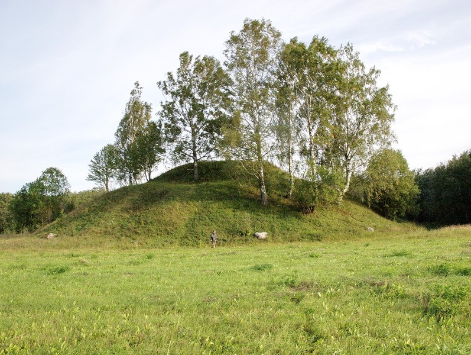
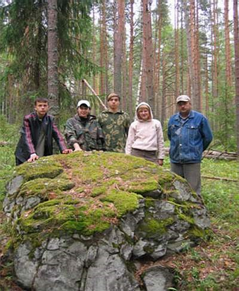

Максатиха
Природа
Курганы

Самыми распространенными археологическими памятниками в Максатихинском районе являются курганы - древние захоронения наших предков. В долинах крупных и мелких рек их можно встретить где угодно. Курганы различны по типам, размерам, форме, времени и этнической принадлежности захоронения. Но всех их объединяет одно - это уникальные памятники археологии, представляющие ценность. Они наследуют многотысячелетние традиции различных насыпных погребальных сооружений, известных ариям, скифам, скандинавам и другим народам. Наиболее изученными являются круглые курганы и ямные захоронения. Почти не исследованными, редкими – длинные курганы, «жальниковские могилы» и довольно большие насыпи округлой формы. В науке их называют новгородскими сопками, в народе - могилами волотов (сколотов - «людей солнца», великанов, богатырей) Самая большая сопка Максатихинского района находится в нескольких километров от въезда в район, недалеко от деревни Трестна. Размеры Трестенской сопки изумляют – около 80 метров в диаметре и 13 метров высоты. Ее вид действительно завораживает, напоминая, что Вы находитесь на очень древней земле!
Камни
На территории Максатихинского района, по берегам рек Кеза и Молога найдено множество так называемых тотемных камней. На одном можно разглядеть таинственные письмена, на другом хорошо виден отпечаток босой ноги человека. Камни лежат здесь с незапамятных времен.

А у места слияния двух рек археологи обнаружили огромный погребальный комплекс со священным двухметровым камнем Алатырь.